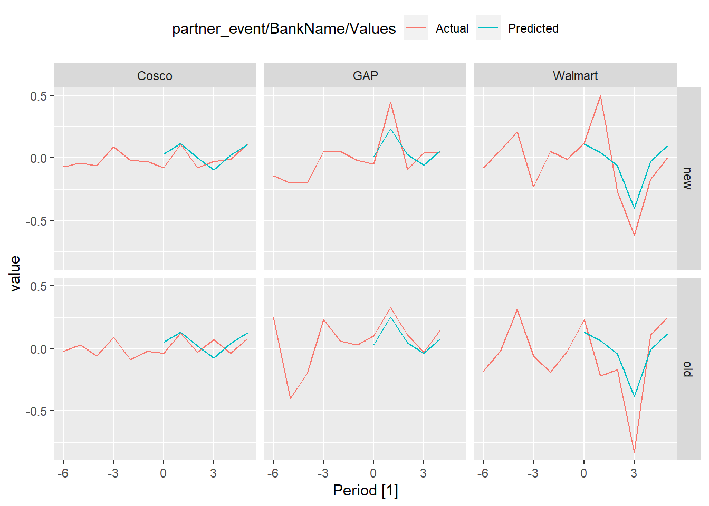

Code
source('functions.R')Warning: package 'tidyverse' was built under R version 4.3.2Warning: package 'ggplot2' was built under R version 4.3.2Warning: package 'tibble' was built under R version 4.3.2Warning: package 'tidyr' was built under R version 4.3.2Warning: package 'readr' was built under R version 4.3.2Warning: package 'dplyr' was built under R version 4.3.2Warning: package 'forcats' was built under R version 4.3.2Warning: package 'lubridate' was built under R version 4.3.2── Attaching core tidyverse packages ──────────────────────── tidyverse 2.0.0 ──
✔ dplyr 1.1.4 ✔ readr 2.1.4
✔ forcats 1.0.0 ✔ stringr 1.5.0
✔ ggplot2 3.4.4 ✔ tibble 3.2.1
✔ lubridate 1.9.3 ✔ tidyr 1.3.0
✔ purrr 1.0.2
── Conflicts ────────────────────────────────────────── tidyverse_conflicts() ──
✖ dplyr::filter() masks stats::filter()
✖ dplyr::lag() masks stats::lag()
ℹ Use the conflicted package (<http://conflicted.r-lib.org/>) to force all conflicts to become errorsWarning: package 'fable' was built under R version 4.3.2Loading required package: fabletoolsWarning: package 'fabletools' was built under R version 4.3.2Warning: package 'feasts' was built under R version 4.3.2Warning: package 'tsibble' was built under R version 4.3.2
Attaching package: 'tsibble'
The following object is masked from 'package:lubridate':
interval
The following objects are masked from 'package:base':
intersect, setdiff, unionWarning: package 'arrow' was built under R version 4.3.2
Attaching package: 'arrow'
The following object is masked from 'package:lubridate':
duration
The following object is masked from 'package:utils':
timestampWarning: package 'memoise' was built under R version 4.3.2Warning: package 'ggrepel' was built under R version 4.3.2Warning: package 'ggtext' was built under R version 4.3.2Warning: package 'prophet' was built under R version 4.3.2Loading required package: Rcpp
Loading required package: rlang
Attaching package: 'rlang'
The following object is masked from 'package:arrow':
string
The following objects are masked from 'package:purrr':
%@%, flatten, flatten_chr, flatten_dbl, flatten_int, flatten_lgl,
flatten_raw, invoke, spliceCode
library(tidymodels) Warning: package 'tidymodels' was built under R version 4.3.2── Attaching packages ────────────────────────────────────── tidymodels 1.1.1 ──
✔ broom 1.0.5 ✔ rsample 1.2.0
✔ dials 1.2.0 ✔ tune 1.1.2
✔ infer 1.0.5 ✔ workflows 1.1.3
✔ modeldata 1.2.0 ✔ workflowsets 1.0.1
✔ parsnip 1.1.1 ✔ yardstick 1.2.0
✔ recipes 1.0.9 Warning: package 'broom' was built under R version 4.3.2Warning: package 'dials' was built under R version 4.3.2Warning: package 'scales' was built under R version 4.3.2Warning: package 'infer' was built under R version 4.3.2Warning: package 'modeldata' was built under R version 4.3.2Warning: package 'parsnip' was built under R version 4.3.2Warning: package 'recipes' was built under R version 4.3.2Warning: package 'rsample' was built under R version 4.3.2Warning: package 'tune' was built under R version 4.3.2Warning: package 'workflows' was built under R version 4.3.2Warning: package 'workflowsets' was built under R version 4.3.2Warning: package 'yardstick' was built under R version 4.3.2── Conflicts ───────────────────────────────────────── tidymodels_conflicts() ──
✖ rlang::%@%() masks purrr::%@%()
✖ yardstick::accuracy() masks fabletools::accuracy()
✖ scales::discard() masks purrr::discard()
✖ dplyr::filter() masks stats::filter()
✖ recipes::fixed() masks stringr::fixed()
✖ rlang::flatten() masks purrr::flatten()
✖ rlang::flatten_chr() masks purrr::flatten_chr()
✖ rlang::flatten_dbl() masks purrr::flatten_dbl()
✖ rlang::flatten_int() masks purrr::flatten_int()
✖ rlang::flatten_lgl() masks purrr::flatten_lgl()
✖ rlang::flatten_raw() masks purrr::flatten_raw()
✖ infer::generate() masks fabletools::generate()
✖ infer::hypothesize() masks fabletools::hypothesize()
✖ rlang::invoke() masks purrr::invoke()
✖ dplyr::lag() masks stats::lag()
✖ parsnip::null_model() masks fabletools::null_model()
✖ rsample::populate() masks Rcpp::populate()
✖ yardstick::spec() masks readr::spec()
✖ rlang::splice() masks purrr::splice()
✖ recipes::step() masks stats::step()
✖ rlang::string() masks arrow::string()
• Dig deeper into tidy modeling with R at https://www.tmwr.orgCode
partner_data <- credit_card.partnerships()
overdue30to89 <- credit_card.overdue_3089()
loan_amt <- credit_card.loan_amount()
loan_unused <- credit_card.unused()
loan_unused_ratio <- credit_card.unused_ratio()
partner_data <- credit_card.partnerships()
selected_measure <- overdue30to89
partners <- partner_data |>
select(-caption) |>
pivot_longer(cols = c('old','new'), names_to = "partnership", values_to = "BankName") |>
filter(partnership %in% c('new','old')) |>
mutate(across(c("acquired", "available"), lubridate::ymd))
agg_data <- aggregate_by_index(selected_measure, "value_diff") |>
rename(value_diff.Agg = value_diff)
bank_data <- partners |>
left_join(selected_measure, relationship = "many-to-many") |>
rename(value_diff.Bank = value_diff) |>
left_join(agg_data) |>
mutate(Period = Quarter - yearquarter(acquired)) Joining with `by = join_by(BankName)`
Joining with `by = join_by(Measure, Description, Quarter)`Code
# Estimate a model
#m <- lm(value_diff.Bank ~ value_diff.Agg + partnership, data = est_data)
# Estimate And observation data
est_data <- bank_data |> filter(between(Period, -6, -1))
obs_data <- bank_data |> filter(between(Period, 0, 5))
m_recipe <- recipe(bank_data) |>
update_role(everything(), new_role = "support") |>
update_role(value_diff.Bank, new_role = "outcome") |>
update_role(value_diff.Agg, partnership, new_role = "predictor") |>
step_dummy(partnership, one_hot=T)
# obs_data <- m_recipe |>
# prep(obs_data) |>
# bake(obs_data)
m_model <- linear_reg() |> set_engine("lm")
m_workflow <- workflow() |>
add_recipe(m_recipe) |>
add_model(m_model)
m_fitted <- m_workflow |> fit(est_data)
y_hat <- m_fitted |> predict(obs_data)Warning in predict.lm(object = object$fit, newdata = new_data, type =
"response", : prediction from rank-deficient fit; consider predict(.,
rankdeficient="NA")Code
#metric_set(rmse, mae, rsq)(obs_data$value_diff.Bank, .pred)
#https://mdneuzerling.com/post/machine-learning-pipelines-with-tidymodels-and-targets/
#In the observation period, subtract the prediction from the actual return to get the “abnormal return.”
obs_data_ar <- bind_cols(obs_data, y_hat) |>
# Using mean of estimation return
mutate(
#mean = value_diff.Bank - mean(est_data$value_diff.Bank),
# Then comparing to peers
#peers = value_diff.Bank - value_diff.Agg,
# Then using model fit with estimation data
Predicted = .pred,
"Actual-Predicted" = value_diff.Bank - .pred)
#put predictions and predictions together for visualisation
actual <- bank_data |>
filter(between(Period, -6, 5)) |>
select(Period, partner_event = name, BankName, partnership, Actual=value_diff.Bank)
predict <- obs_data_ar |>
select(Period, partner_event = name, BankName, partnership, Predicted)
actual |> left_join(predict) |>
as_tsibble(index=Period, key=c(partner_event, BankName)) |>
pivot_longer(cols=c(Actual,Predicted), names_to = "Values") |>
autoplot(value,aes(color = Values)) + facet_grid(partnership ~ partner_event) +
theme(legend.position = "top")Joining with `by = join_by(Period, partner_event, BankName, partnership)`Warning: Removed 6 rows containing missing values (`geom_line()`).